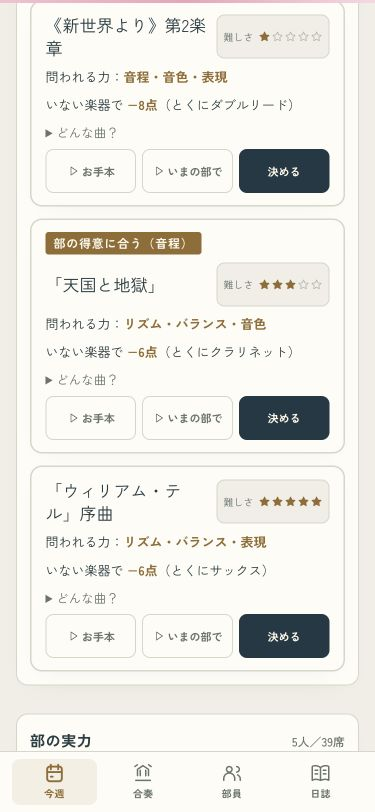
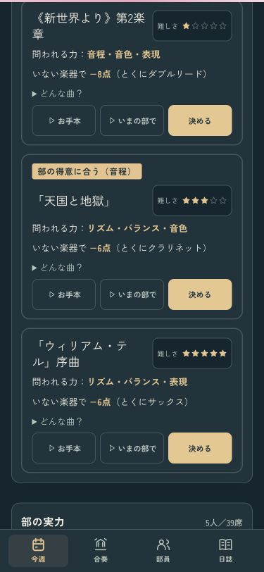
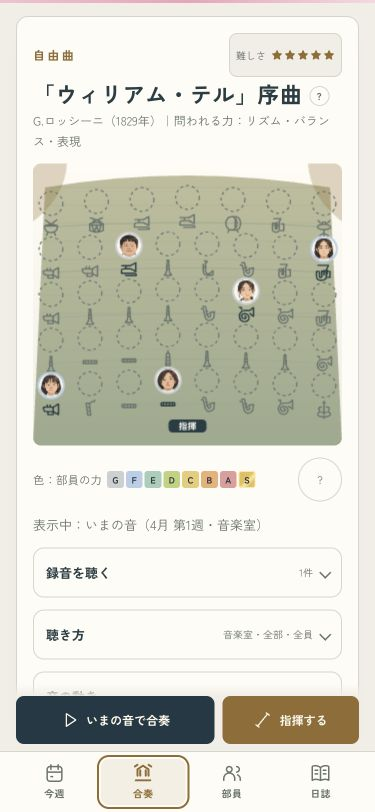
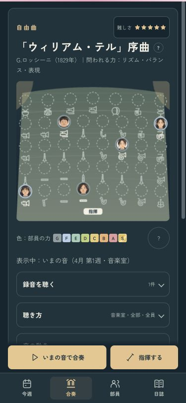

曲の難しさは、覚えるまでの時間
全15曲に、譜読みの重さを星1〜5で付けました。星が多い曲ほど同じ練習で覚えられる量が少なくなります。実力や「譜読みが速い」スキルはこれまでどおり効き、すでに覚えた分も残ります。
確認用の画面です。いつものセーブや設定は書き換えません。
選ぶ前に、星を見る · 375px
曲名の横に難しさを表示。星を押すと、譜読みの時間について説明が出ます。部員の力はこれまでどおりG〜Sです。
ライト
ダーク
同じ曲・同じ部で比べた確認例
難しさだけを変え、体力ややる気などの条件を固定して合奏を重ねた例です。9割を覚えるまでの練習回数に差が出ました。
選んだあとも、合奏で分かる · 375px
自由曲と課題曲の両方に効きます。曲を選び直しても、その曲ですでに覚えた分を引きつぎます。
ライト
ダーク
全15曲の確認について
同じ10組の入部条件で、変更前と変更後をそれぞれ3年分ずつ進めました。初年度の県大会平均は全15曲で37〜47点の目安に収まっています。2・3年目は変更前から目安を上回る曲もあり、比較結果を記録しています。
曲ごとの変更前後の確認結果 · 譜読み・スキル・セーブの確認結果